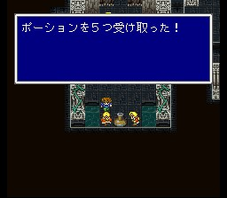
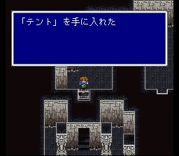
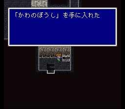
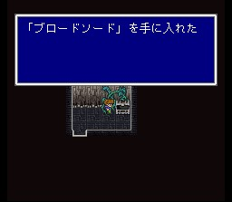
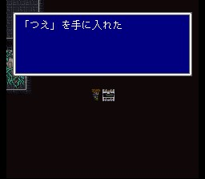

바람의 신전
바람의 신전 1층 오른쪽 방으로 들어가면 대신과 학자들이 있습니다. 그들과
대화를 하면 타이쿤왕은 바람의 신전 상층부에 올라갔고, 신전 안으로 마물들이 들어갔다는
것을 알게 됩니다. 일행은 왕을 따라 올라가기로 합니다. 출발하기 전에 혹시 다친
멤버가 있다면 회복을 해 두고, 학자에게서 포션을 받아둡니다.

올라가보면 이제 제법 다양한 형태의 마물들이 출현하기 시작합니다. 그러나
여전히 브로드스워드 한방으로 죽는 놈들입니다. 중간에 세이브 포인트가 있어 사용법을
배웁니다. 보물상자들도 챙기시고.. 그 중 하나 안 보이는 길 끝에 있는 보물상자가
있는데, 나중에 도둑 직업을 얻게 되면 확인할 수 있습니다. 챙기기는 어렵지 않습니다.
보스가 있는 층에 도달하면 역시
안 보이는 지름길이 있습니다.

최상층으로 올라가는 계단 앞을 최초의 보스, 윙랩터가 지키고 있습니다. 이 녀석은 브레스윙으로 아군 전원에게 데미지를 입힙니다. 전멸이 안 되도록 주의하면서 갖고 있는 두 개의 브로드스워드로 공격합시다. 단, 날개 속에 숨었을 때 공격하면 효과도 없을뿐더러 강력한 반격을 해 오므로 기다려야 합니다.
최상층에 도달하면 바람의 크리스탈은 이미 깨져 버렸고, 타이쿤왕이 잠시 나타나 멤버들에게 세상을 구하라는 사명을 내립니다. 크리스탈의 조각으로부터 최초의 직업 6가지, 나이트, 몽크, 청마도사, 시프, 흑마도사, 백마도사를 얻습니다.
워프존을 통과하면 바람의 신전 바깥으로 나오니, 배를 타고 이번에는 서쪽에 있는 툴 마을로 향합시다.